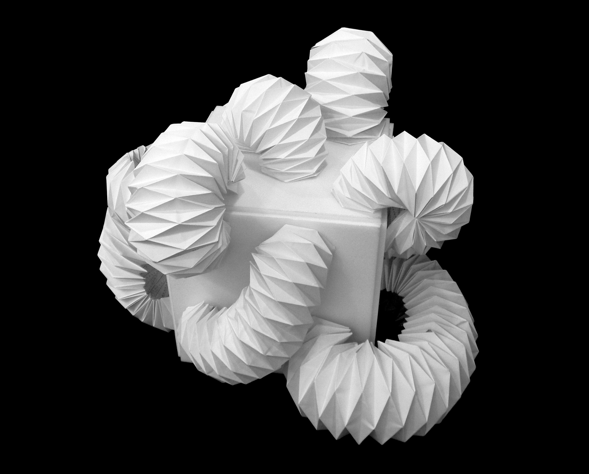

Interconflux
Sep 22, 2023
Usually, buildings conceal their rounded and circular parts within their structure. Instead, they selectively showcase rectangular parts. In this paper sculpture, I attempted to reverse the inside and outside of an architecture. By exposing the internal structure of a building, the sculpture challenges the conventional norms of architecture and offers a fresh perspective.
